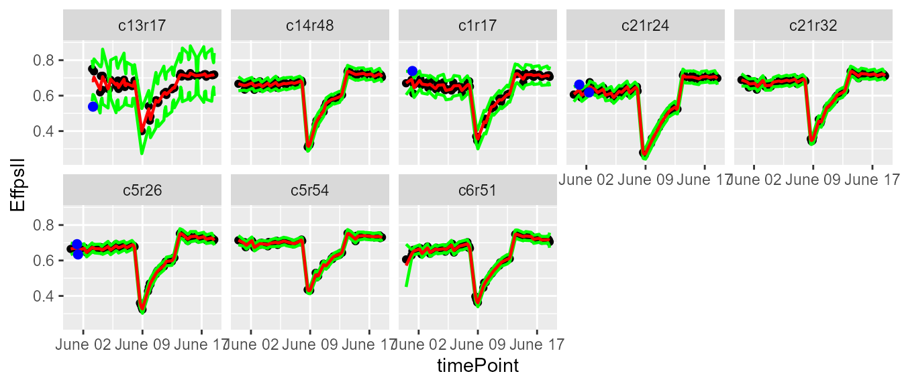
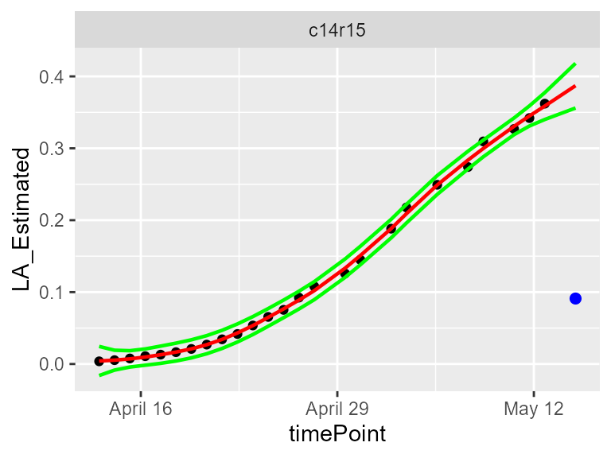
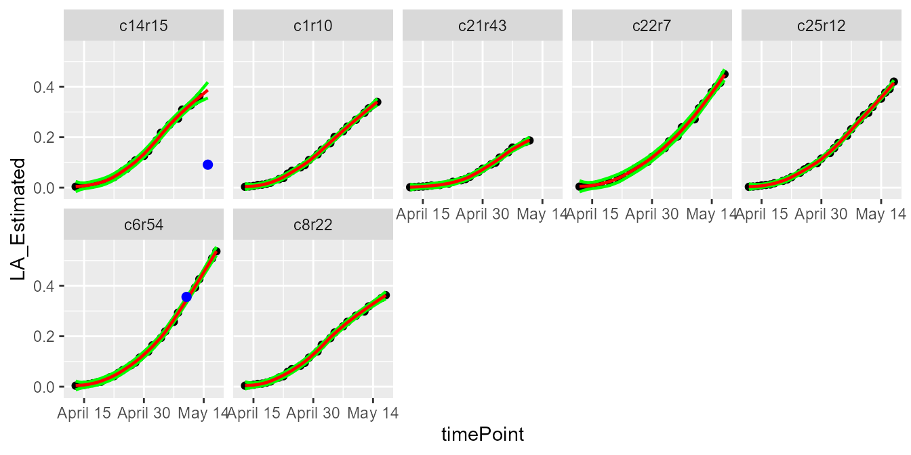
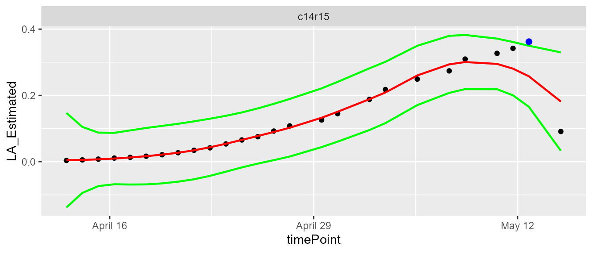
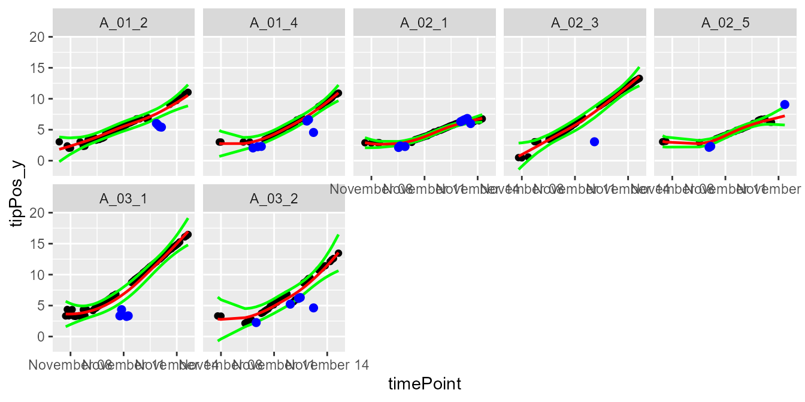

statgenHTP tutorial: 2. Outlier detection for single observations
Emilie Millet, Bart-Jan van Rossum, Isabelle Sanchez, Nadine Hilgert
2021-02-23
OutlierSingleObs_HTP.RmdIntroduction
An outlier is usually defined as an observation that appears to be inconsistent with the remainder of the data set (Barnett and Lewis 1994). Observations may be single time points (Grubbs 1950) or whole time courses of one or more variables (Hubert, Rousseeuw, and Segaert 2015). An illustration is given below, where we see the difficulty of deciding whether a biomass time course (red curve at the bottom left) is atypical in a set of time courses from plants of the same genotype, or whether this slow growth is due to the plant’s position in the platform.
![Heatmap of the biomass estimated at a specific time point (with a color gradient) of each plant according to its location in the platform (line, position). Well-watered (WW) treatment on the left, water deficit (WD) on the right. The plots show the biomass time courses for a given genotype (3 repetitions in each treatment). The question is whether the red growth curve on the left corresponds to an outlier plant (seed problem for example) or whether this slow growth is due to the plant's location in the platform (PhenoArch Platform, INRAE). *Courtesy: Llorenç Cabrera-Bosquet and Santiago Alvarez Prado.*](figures/heatmap.png)
Heatmap of the biomass estimated at a specific time point (with a color gradient) of each plant according to its location in the platform (line, position). Well-watered (WW) treatment on the left, water deficit (WD) on the right. The plots show the biomass time courses for a given genotype (3 repetitions in each treatment). The question is whether the red growth curve on the left corresponds to an outlier plant (seed problem for example) or whether this slow growth is due to the plant’s location in the platform (PhenoArch Platform, INRAE). Courtesy: Llorenç Cabrera-Bosquet and Santiago Alvarez Prado.
The concept of outlier can be extended to “outlier plants,” defined here as biological replicates deviating from the overall distribution of plants on a multi-criteria basis, regardless of the quality of measurements (Alvarez Prado et al. 2019).
This documents describes the procedures to detect outlying single observations in a time course with examples on experimental data measured directly on the plants or indirectly via image analysis for example.
Definition of outlying single observation
Time courses of phenotypic data are viewed as continuous time-related functions. The first cleaning step consists in roughly checking the consistency of each point with its neighbors within a time course. Outlying single observations are measurements at a given time that do not follow the expected behavior. The detection of outlying observations is done “one time course after the other.” Identifying and removing these points will facilitate the outlier detection of series of observations or plants, as proposed in statgenHTP tutorial: 4. Outlier detection for series of observations.
The detection requires fitting a model from the data, as a function of time. Two types of models can be used, one based on nonlinear parametric regression (Gompertz Model or sigmoidal function for example) and the other on non-parametric regression. Data annotation is based on the comparison of the experimental data with its estimated value from the model. If they significantly differ, the data will be annotated as suspect.
NOTE: We only consider non-parametric regression in this package because of its flexibility to fit any type of curve.
Illustration of the non-parametric function
Local regression is a well known smoothing technique which locally approximates an unknown function by parametric functions. It is a two-step procedure included in the detectSingleOut function: the locfit() function fits a local regression at a set of points, then, the predict() function is used to interpolate this fit to other points. A confidence interval can then be calculated. Points outside this interval will be annotated as outliers.
The user can set:
the smoothing parameter
nnLocfit. This is the parameternnfrom the locfit package (Nearest neighbor component of the smoothing parameter). This parameter values range from 0 to 1, with the higher the value, the smoother the curve.the level at which the confidence interval
confIntSizeis calculated. A large value calculates a wide interval and fewer outliers are annotated.the parameter
checkEdges. By setting this parameter toTRUE(the default), before the local regression a check is done to determine if the first and last time point in the time series for a plot are outliers. Thelocfitfunction sometimes has problems determining these outliers. The use of this parameter is demonstrated in example 2.
The functions are illustrated with the three example data sets. For more information about the data, see statgenHTP tutorial: 1. Introduction, data description and preparation.
Example 1
First a TP object is created containing all the time points.
PhenovatorDat1 <- PhenovatorDat1[!PhenovatorDat1$pos %in% c("c24r41", "c7r18", "c7r49"), ]
## Create a TP object containing the data from the Phenovator.
phenoTP <- createTimePoints(dat = PhenovatorDat1,
experimentName = "Phenovator",
genotype = "Genotype",
timePoint = "timepoints",
repId = "Replicate",
plotId = "pos",
rowNum = "y", colNum = "x",
addCheck = TRUE,
checkGenotypes = c("check1", "check2", "check3", "check4"))We are then running the function on a subset of plants to set the parameters, using the plotIds option. The smoothing parameter nnLocfit is set at 0.1. The curves are atypical and to detect only the very strange points, fitted curves cannot be too smooth. The confidence interval size confIntSize is set at 3 which is a relatively narrow interval.
# First select a subset of plants, for example here 8 plants.
plantSel <- c("c1r17","c13r17","c6r51","c21r24","c5r54","c21r32","c14r48","c5r26")
# Then run on the subset
resuVatorHTP <- detectSingleOut(TP = phenoTP,
trait = "EffpsII",
plotIds = plantSel,
confIntSize = 3,
nnLocfit = 0.1)| plotId | timePoint | EffpsII | yPred | sd_yPred | lwr | upr | outlier | |
|---|---|---|---|---|---|---|---|---|
| 14 | c13r17 | 2018-06-06 14:37:00 | 0.685 | 0.6652226 | 0.0296058 | 0.5764051 | 0.7540400 | 0 |
| 15 | c13r17 | 2018-06-06 16:37:00 | 0.638 | 0.6457325 | 0.0421541 | 0.5192701 | 0.7721948 | 0 |
| 16 | c13r17 | 2018-06-07 09:07:00 | 0.690 | 0.6931412 | 0.0488887 | 0.5464752 | 0.8398073 | 0 |
| 17 | c13r17 | 2018-06-07 11:37:00 | 0.649 | 0.6598289 | 0.0302392 | 0.5691112 | 0.7505465 | 0 |
| 18 | c13r17 | 2018-06-07 14:37:00 | 0.668 | 0.6556880 | 0.0223011 | 0.5887847 | 0.7225913 | 0 |
| 19 | c13r17 | 2018-06-07 16:37:00 | 0.663 | 0.6681819 | 0.0401541 | 0.5477196 | 0.7886443 | 0 |
The function output is a data.frame containing for each plant at each time point: the predicted value, yPred, the standard deviation of the prediction, sd_yPred, the limits of the confidence interval, lwr and upr, and the outlier status. When a point is annotated as outlying, the last column value is 1, it is 0 otherwise.
The predicted values can be visualized to adjust the smoothing parameter and the confidence interval using the plot function. The option outOnly, default value TRUE, enables visualizing only plants with annotated outliers. Here, we are visualizing one plant and then all the selected plants to check the prediction.
plot(resuVatorHTP,
plotIds = "c13r17",
outOnly = FALSE)
plot(resuVatorHTP,
plotIds = plantSel,
outOnly = FALSE)
In the plots, the black points are the raw data, the red line is the predicted curve, the green lines are the lower and upper limits of the confidence interval. Outlying points are highlighted in blue.
The annotated points can be replaced by NA for the studied trait using the function removeSingleOut. It creates a new TP object.
phenoTPOut <- removeSingleOut(phenoTP,
resuVatorHTP)
# Check one value annotated as outlier in the original TP object
phenoTP[[16]][phenoTP[[16]]$plotId=="c14r32", c("plotId", "EffpsII")]
#> plotId EffpsII
#> 16 c14r32 0.63
# Check the same value in the new TP object
phenoTPOut[[16]][phenoTPOut[[16]]$plotId=="c14r32", c("plotId", "EffpsII")]
#> plotId EffpsII
#> 16 c14r32 0.63Example 2
First a TP object is created containing all the time points.
phenoTParch <- createTimePoints(dat = PhenoarchDat1,
experimentName = "Phenoarch",
genotype = "geno",
timePoint = "Time",
plotId = "pos",
rowNum = "Row",
colNum = "Col")We are then running the function on a subset of plants to set the parameters, using the plotIds option. The smoothing parameter nnLocfit is set at 0.5. The curves are linear and medium smooth is enough. The confidence interval size confIntSize is set at 5 which is a medium interval.
# First select a subset of plants, for example here 7 plants
plantSelArch <- c("c22r7", "c8r22", "c1r10", "c21r43", "c14r15", "c25r12", "c6r54")
# Then run on the subset
resuArchHTP <- detectSingleOut(TP = phenoTParch,
trait = "LA_Estimated",
plotIds = plantSelArch,
confIntSize = 5,
nnLocfit = 0.5)| plotId | timePoint | LA_Estimated | yPred | sd_yPred | lwr | upr | outlier | |
|---|---|---|---|---|---|---|---|---|
| 22 | c14r15 | 2017-05-09 | 0.3095688 | 0.2998288 | 0.0023225 | 0.2882164 | 0.3114412 | 0 |
| 23 | c14r15 | 2017-05-11 | 0.3268933 | 0.3305959 | 0.0023188 | 0.3190019 | 0.3421899 | 0 |
| 24 | c14r15 | 2017-05-12 | 0.3420478 | 0.3450079 | 0.0028001 | 0.3310072 | 0.3590086 | 0 |
| 25 | c14r15 | 2017-05-13 | 0.3621102 | 0.3587838 | 0.0037381 | 0.3400936 | 0.3774741 | 0 |
| 26 | c14r15 | 2017-05-15 | 0.0910594 | 0.3871152 | 0.0062159 | 0.3560358 | 0.4181947 | 1 |
The prediction values can be visualized to adjust the smoothing parameter and the confidence interval using the plot function.
plot(resuArchHTP,
plotIds = "c14r15",
outOnly = FALSE)
plot(resuArchHTP,
plotIds = plantSelArch,
outOnly = FALSE)
In the plots, the black points are the raw data, the red line is the predicted curve, the green lines are the lower and upper limits of the confidence interval. Outlying points are highlighted in blue.
It is possible to run the outlier detection without first checking if the first and last time point are outlying. Doing this could be useful is some cases, but might give undesired results as well as the example below shows.
# Detect outliers without first checking edges.
resuArchHTPNoEdges <- detectSingleOut(TP = phenoTParch,
trait = "LA_Estimated",
plotIds = "c14r15",
checkEdges = FALSE,
confIntSize = 5,
nnLocfit = 0.5)
plot(resuArchHTPNoEdges)
The annotated points can be replaced by NA for the studied trait using the function removeSingleOut. It creates a new TP object.
phenoTParchOut <- removeSingleOut(phenoTParch,
resuArchHTP)
# Check one value annotated as outlier in the original TP object
phenoTParch[[30]][phenoTParch[[30]]$plotId=="c12r31", c("plotId", "LA_Estimated")]
#> plotId LA_Estimated
#> 37368 c12r31 0.2447164
# Check the same value in the new TP object
phenoTParchOut[[30]][phenoTParchOut[[30]]$plotId=="c12r31", c("plotId", "LA_Estimated")]
#> plotId LA_Estimated
#> 37368 c12r31 0.2447164Example 3
First a TP object is created containing all the time points.
rootTP <- createTimePoints(dat = RootDat1,
experimentName = "UCL1",
genotype = "Genotype",
timePoint = "Time",
plotId = "plantId",
rowNum = "Strip",
colNum = "Pos")We are then running the function on a subset of plants to set the parameters, using the plotIds option. The smoothing parameter nnLocfit is set at 1. The curves are almost linear and a strong smooth is enough to get an accurate curve shape (line). The confidence interval size confIntSize is set at 5 which is a medium interval.
# First select a subset of plants, for example here 7 plants
plantSelRoot <- unique(RootDat1$plantId)[1:7]
# Then run on the subset
resuRootHTP <- detectSingleOut(TP = rootTP,
trait = "tipPos_y",
plotIds = plantSelRoot,
confIntSize = 5,
nnLocfit = 1)| plotId | timePoint | tipPos_y | yPred | sd_yPred | lwr | upr | outlier | |
|---|---|---|---|---|---|---|---|---|
| 38 | A_01_2 | 2016-11-12 03:21:58 | 6.775000 | 6.355150 | 0.1571693 | 5.569304 | 7.140996 | 0 |
| 39 | A_01_2 | 2016-11-12 05:41:17 | 6.760714 | 6.451046 | 0.1570347 | 5.665872 | 7.236219 | 0 |
| 40 | A_01_2 | 2016-11-12 14:57:43 | 6.775000 | 6.856314 | 0.1555333 | 6.078648 | 7.633981 | 0 |
| 41 | A_01_2 | 2016-11-12 17:16:51 | 6.921429 | 6.965262 | 0.1550652 | 6.189936 | 7.740588 | 0 |
| 42 | A_01_2 | 2016-11-13 04:52:57 | 6.014286 | 7.576345 | 0.1541887 | 6.805402 | 8.347288 | 1 |
| 43 | A_01_2 | 2016-11-13 07:12:14 | 5.728571 | 7.711560 | 0.1549867 | 6.936627 | 8.486493 | 1 |
The prediction values can be visualized to adjust the smoothing parameter and the confidence interval using the plot function.
plot(resuRootHTP,
plotIds = "A_03_2",
outOnly = FALSE)
plot(resuRootHTP,
plotIds = plantSelRoot,
outOnly = FALSE)
In the plots, the black points are the raw data, the red line is the predicted curve, the green lines are the lower and upper limits of the confidence interval. Outlying points are highlighted in blue.
The annotated points can be replaced by NA for the studied trait using the function removeSingleOut. It creates an new TP object.
rootTPOut <- removeSingleOut(rootTP,
resuRootHTP)
# Check one value annotated as outlier in the original TP object
rootTP[[11127]][rootTP[[11127]]$plotId == "A_01_2", c("plotId", "tipPos_y")]
#> plotId tipPos_y
#> 42 A_01_2 6.014286
# Check the same value in the new TP object
rootTPOut[[11127]][rootTPOut[[11127]]$plotId == "A_01_2", c("plotId", "tipPos_y")]
#> plotId tipPos_y
#> 42 A_01_2 NA